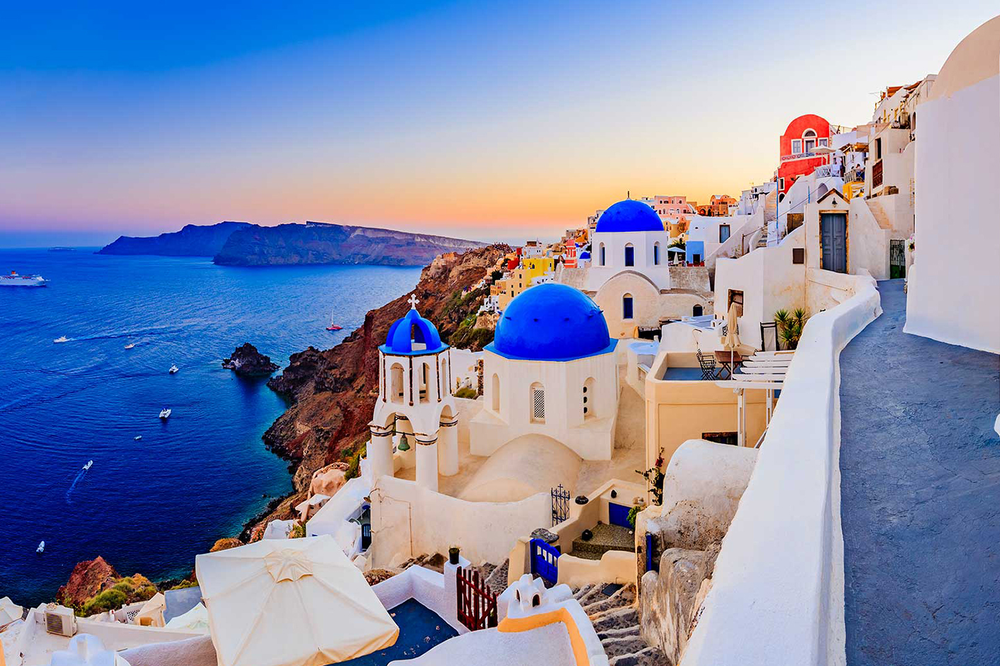

MUNDO NATURAL
Atardeceres
El atardecer es el paso de la luz del día a la oscuridad de la noche. El cielo se oscurece poco a poco a medida que la Tierra gira sobre sí misma y alrededor del Sol, dejando de recibir su luz hasta llegar a la oscuridad.

El futuro de la naturaleza es nuestro futuro
Para tener resultados tangibles y duraderos debemos emprender colaboraciones radicales a través de distintos sectores, creencias y bases de conocimiento.
Fotografía de Naturaleza
Hoy en día la concepción contemporánea de la fotografía de la naturaleza no solo hace énfasis en lo estético, en flora y fauna para el despertar de la conciencia ecológica de preservarla.
Fenómenos de la naturaleza
Las auroras boreales se observan como unas luces en el cielo que se manifiestan cuando átomos y moléculas en las capas superiores de la atmósfera colisionan con electrones de alta energía.
Naturaleza Marina
La vida marina se refiere a todos los animales, plantas y organismos que viven en los mares y océanos de agua salada de la Tierra. Todos los organismos desempeñan un papel en el funcionamiento saludable de estos asombrosos y complejos ecosistemas.

Pamukkale
Pamukkale significa en turco "castillo de algodón". Esta especie de nube de algodón está situada en la provincia de Denizli, en Turquía. Esta impresionante formación calcárea tiene 200 metros de altura y 2,5 kilómetros de longitud
LUGARES PARA VIAJAR
 |
 |
 |
 |
| Tahití, Francia | Cancún, México | Orlando, EE.UU | Ámsterdam, Países Bajos |
|  | |||
| Tailandia | Islas griegas | Tokio, Japón | Machu Picchu, Perú |